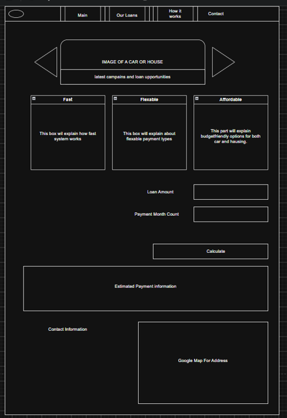
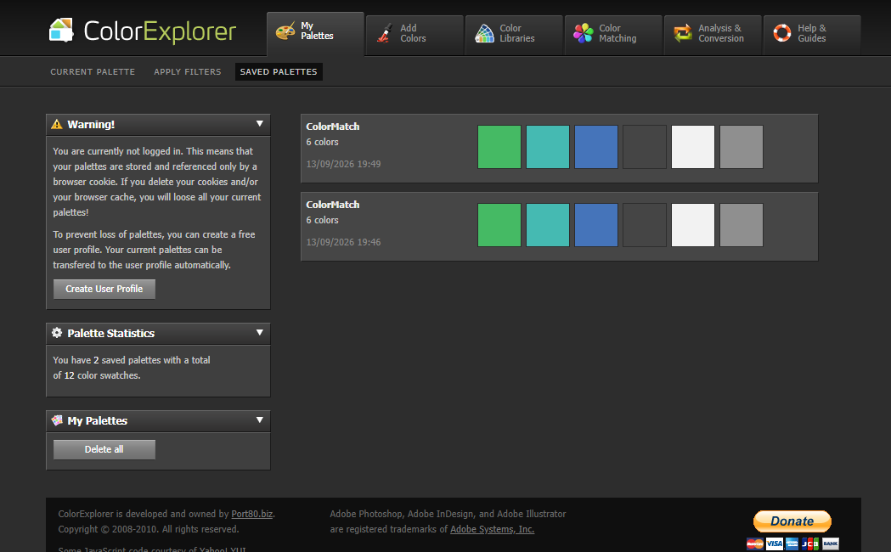
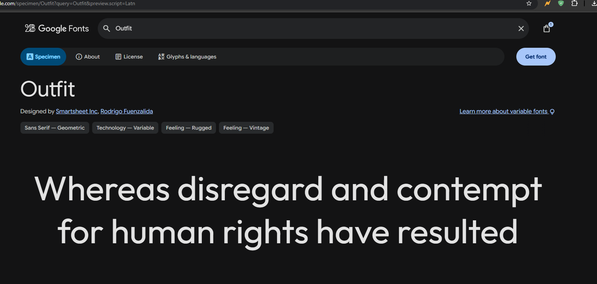

Super Loan Web Site
Super Loan aiming to be best alternative for loan needs. System offers reliable, quick and flexible loans. With loan calculations users can easily learn payment details for their loan options and get a basic idea of what to pay in a few clicks!. The main audience for the website generally people who are looking for a new car or a house. Since aim is to make it simple as possible our website will be a less complicated version of
most of them needs user account complicated information in order to get a basic loan payment plan or even they look like they will do calculation but directs user to some else where first. We will skip those steps and quickly get our result. If payments suit’s users need user will directly contact to our loan company. Then our loan company will handle the rest. All development will be made with HTML5,CSS3 and JavaScript. Web site will be “responsive” that means it will work with different devices like tablet or mobile phone not only for desktop/laptop computers. Also smart TV will be able to render website. Please note that website won’t be available on smart watches. we will change design of web page based on mobile or dekstop there is also small configurations for tablet too. Our main goal is to create a simple and intuitive design quick and informative UI with suitable loan calculations.
Main Features
Overal purpose is to get a quick quote and easy contact to an agent. web site is basically aiming for that to list some of features;
- Intuitive design
- Quick information on what can be owned via loans.
- A quick calculator that helps user to predict how much will be paid.
- A commercial website for reaching company and communicate with potential customers.
Our starting point mockup

And Our Final Mockup

Web Report
Mock-Ups
As a programmer creating muck-ups was my weakest point I had to spend alot of time at https://app.diagrams.net/ even it's 4 page web site it took time to complete it. Then again I relized I had to do mobile version of mock-ups at second time i found it much more easier.
Colors
Mostly I prefered green color to refer "money" and also I have a color palette as follows. But eventually I decided to use a yellow color tone instead of blue. Yellow also refers to gold and fit better with green background here is my initial color theme;

Here is final color theme;
Fonts
I used a font named Outfit it seemed clean and easy to read here is a screen shot below;
Photos/Videos
Taking a photo of someone's car always feels a bit weird to me, so I had to keep it quick and could only take a few photos of the same car. As for video, it's almost impossible to film someone's car. I went to Tampere, then went up the Näsinneula Tower and took a video from the top. I finally managed to see so many apartments and houses, and taking photos of houses was much easier.
Most Time consuming Elements
The image slider was the first challenge I faced. Of course, there are a lot of working sliders out
there,
but I wanted to build my own. So I created a div system that places all the images together and only
switches which image index is rendered. Finally, I had to write the proper JavaScript to make it work.
Then came the gallery page. I had to watch some tutorials and check W3Schools a lot again to make it
happen.
First, I added the image boxes. Then I found some nice CSS tutorials on rotating images gently, and
lastly I
added a nice box shadow. The second part was zooming in on the currently selected image. For that, I
again
had to use JavaScript to set the "src" property of the img tag, and of
course I had to play with z-indexes to fully disable clicking on the background. When I realized that I
needed different image sizes for different screen sizes, I started playing with the scale of the images.
For that, I needed @media queries, and I had to revisit the whole structure.
Making sure everything looks and works the same way in all browsers (Firefox, Chrome and Internet
Explorer),
then pushing it to the server and checking it on my phone and tablet, is a time-consuming and slightly
boring process. Finding a problem usually makes you feel flustered, but of course that's what real-world
work is like. I had to read the project documentation again and again, and every time I found something
missing or something that needed more work. Even though it wasn't a long document at all, it was good
proof of how easy it is to miss something.

I'd say my final boss was the sliders. I wanted that page to look as original as possible, so I looked
at
various slider examples and finally managed to build my own. My goal was to play with the colors on the
left and right sides of the slider and to add a custom slider handle.
Funny Moments
- So many times I forgot to close a div and saw my website look weird. Figuring out what had happened always gave me a quick mix of satisfaction and a smile :D
- While I was working, I usually opened endless tabs and couldn't find my localhost website. My solution was to run another live server, so I ended up with even more open tabs and made things even harder :D
- My first upload to the server was a big failure: none of the images or icons worked because of the URL paths. It was also a funny moment.
Course Experience
I can confidently say that this course helped me refresh my web development skills and knowledge.
It was also good to see that we still use W3Schools. That site was my only source when I was learning,
and it's still the best one. It wasn't a theoretical course; it was hands-on, practical learning.
Besides the knowledge, I had the chance to learn about internet sites I had never heard of before, like
Lemmy.world and other decentralized social media platforms, and about a lot of open-source software that
I
had never tried before.
I had also never come across GNU before, but it seems that thanks to Richard Stallman, we still have
these
open-source applications, and the open-source movement is still going strong.
AI Content info
I only used AI for the background of my main menu. It was something I couldn't draw on my own, but even
with Claude Fable 5.1, it was never able to create one that looked completely correct, so you will
notice
some minor drawing errors in the menu background. I'm attaching our funny conversation about that. The
PDF
was also created by Claude. You will see that I had to prompt it twice because it didn't give correct
information about how it had created it. Even the final PDF doesn't match word for word.
Here is Conversation output